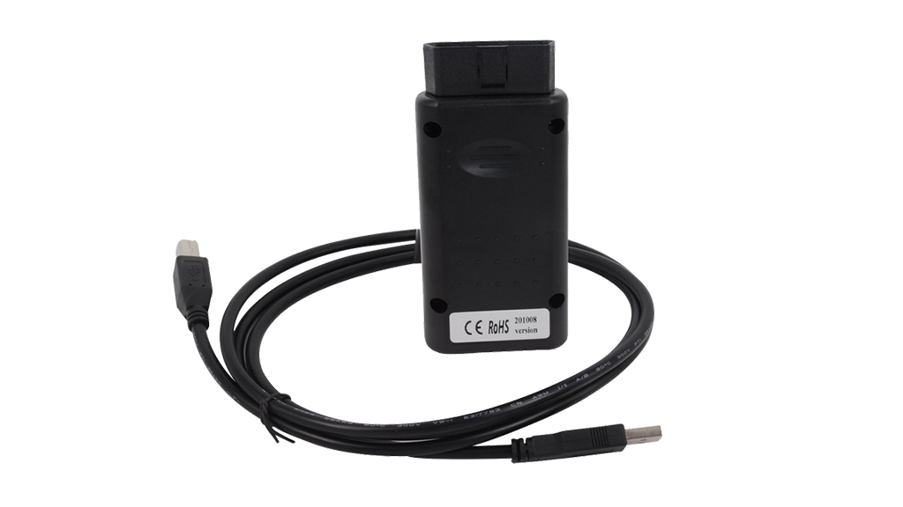
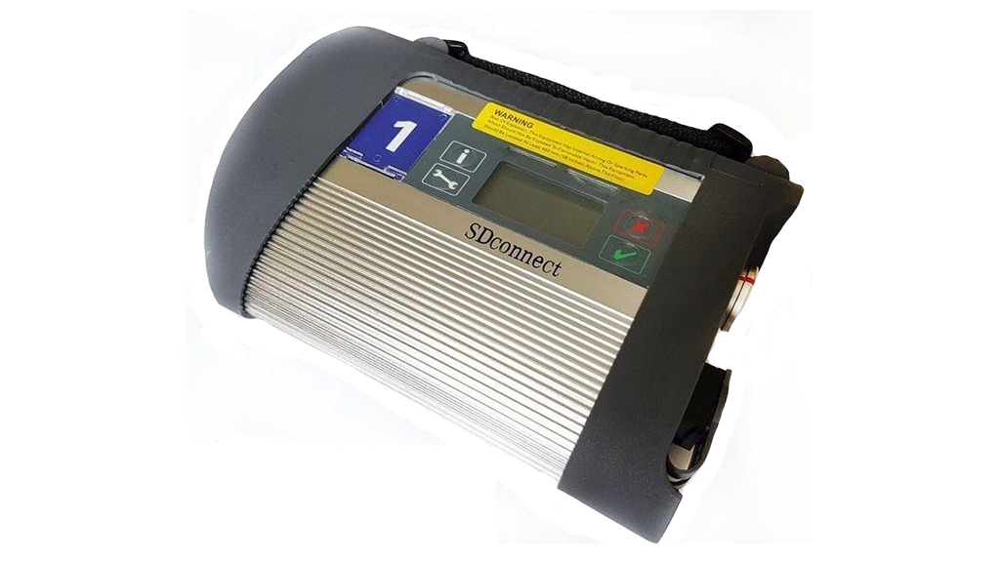
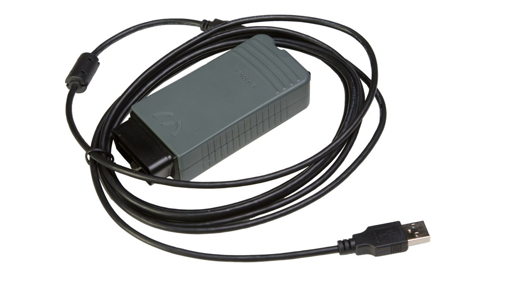
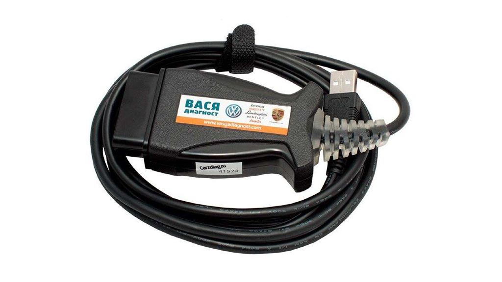
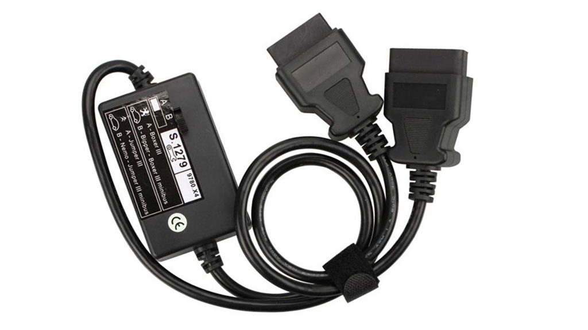
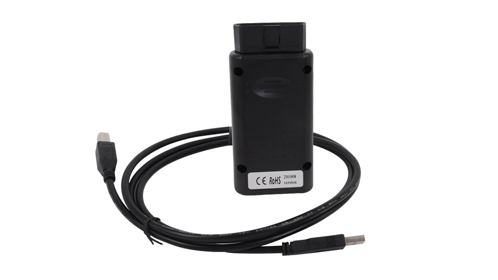
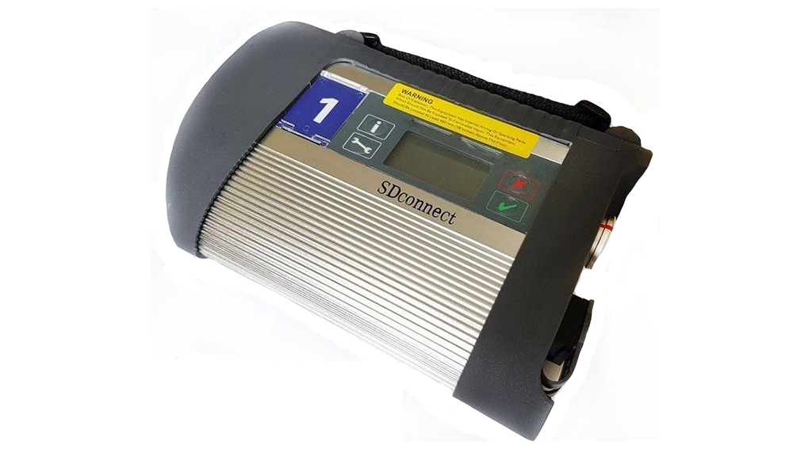
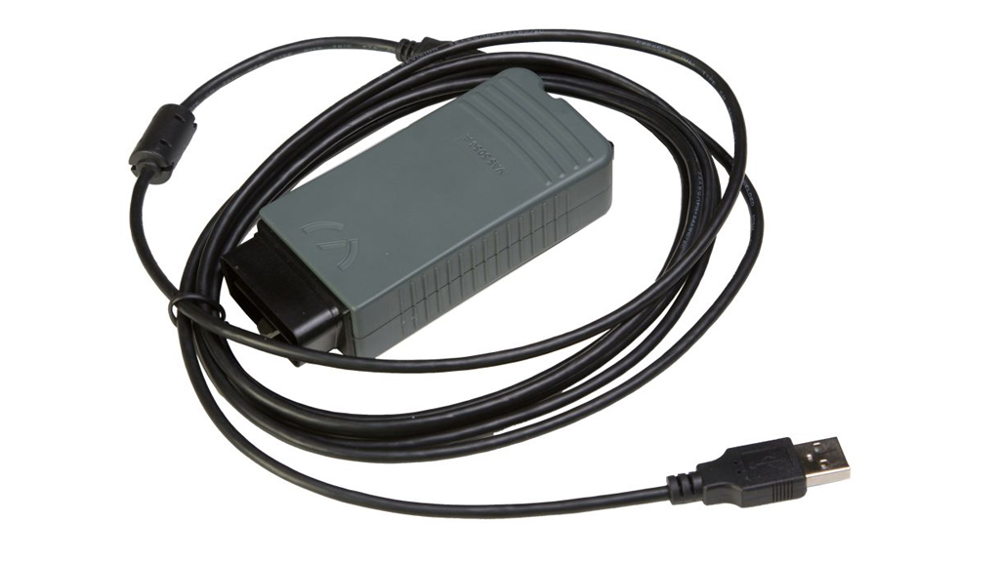
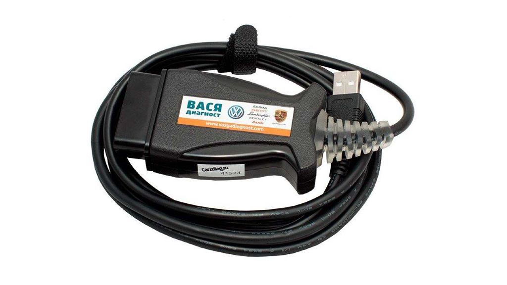
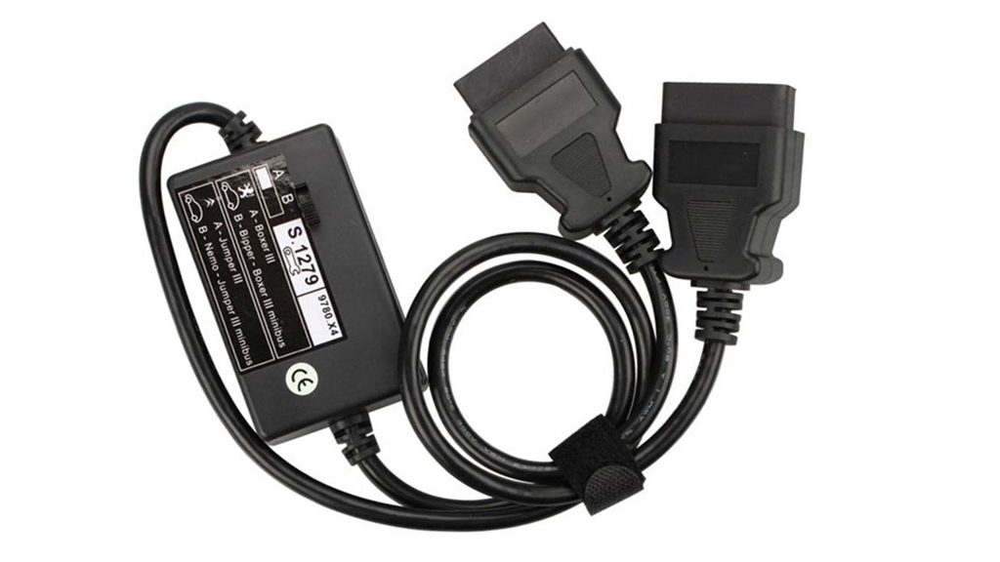

Обладнання
 









Діагностичне обладнання
Для OBD діагностики, читання і видалення помилок, калібрування датчиків, скидання сервісних інтервалів і інших діагностичних процедур ми використовуємо такі моделі обладнання:
- Bosch KTS 560;
- AutoCom CDP+;
- Renault CAN Clip;
- Lexia 9780.Z5;
- Mercedes-Benz SDConnect 4;
- VAS 5054a;
- Вася діагност;
- Адаптер S.1279 для Lexia-3 та ін.

Діагностичний стенд CR-JET-4E для перевірки форсунок CommonRail
Діагностичний стенд CR-JET призначений для перевірки форсунок Common Rail виробництва Bosch, Delphi, Denso, Siemens, в тому числі пьезофорсунок, при системному тиску до 2400 бар з функцією присвоєння коду Bosch IMA, Delphi C2I / C3I, Denso QR, Siemens VDO IIC.
На дисплеї стенду відображається весь процес діагностики. Вимірювання відбувається у електронну систему вимірювання по вбудованим тест-планам виробника. Стенд CR-JET дозволяє одночасно перевіряти 4 форсунки, а також контролювати температуру тестової рідини на кожній форсунці. Генерація коду відбувається в автоматичному режимі.
Стенд для діагностики і ремонту рядних насосів (ПНВТ)
У паливному стенді для ремонту і діагностики ПНВТ використовуються:
- 15 кВт електродвигун змінного струму з високим крутним моментом;
- Система автономної стабілізації температури палива;
- Система високого і низького тисків подачі палива;
- Беззазорна приводна муфта;
- Джерело постійного струму з напругою 12 і 24 В;
- Система управління з використанням електронного програмованого тахосчетчіка;
- 112-й секційна об'ємна система вимірювання циклових подач з мензурками малого і великого обсягу;
- Система стабілізації швидкості обертання приводу зі зворотним зв'язком що дозволяє утримувати задану швидкість незалежно від навантаження;
- Маховик з високим інерційним моментом.
Паливний стенд дозволяє проводити наступні операції:
Випробування і регулювання рядних паливних насосів високого тиску (Надалі ПНВТ) з самостійною системою змащення, з кількістю секцій до дванадцяти, шляхом контролю таких параметрів і характеристик:
- Величина і рівномірність подачі палива секціями (продуктивність насосних секцій);
- Частота обертання валу ПНВТ у момент початку дії регулятора;
- Частота обертання валу ПНВТ у момент припинення подачі палива;
- Тиск відкриття нагнітальних клапанів;
- Кут початку нагнітання і кінця подачі палива по повороту валу ПНВТ і чергування подачі секціями ПНВТ;
- Кут дійсного початку і кінця впорскування палива (при діагностуванні);
- Характеристика автоматичної муфти випередження впорскування.